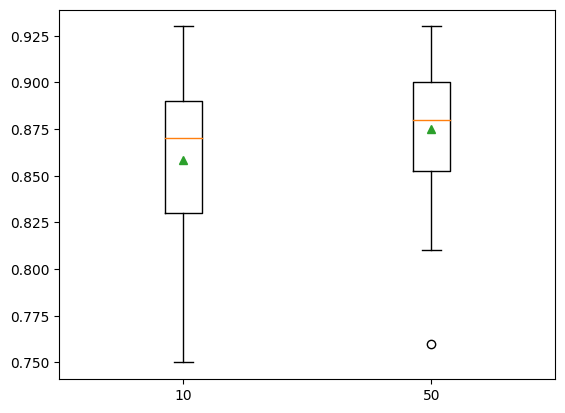
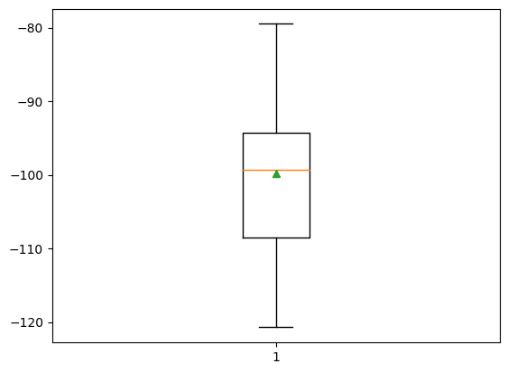
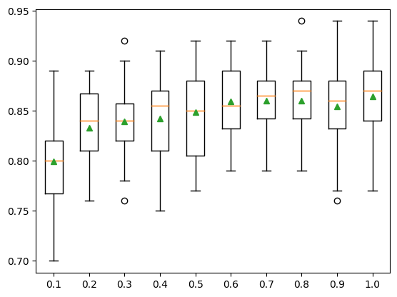
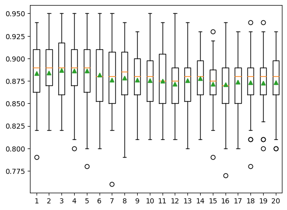
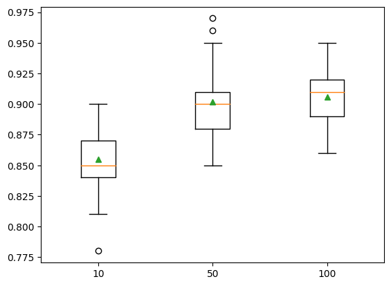
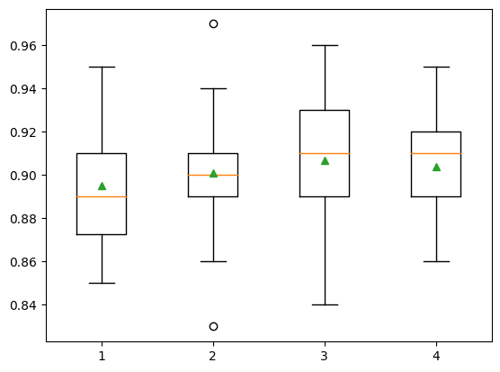
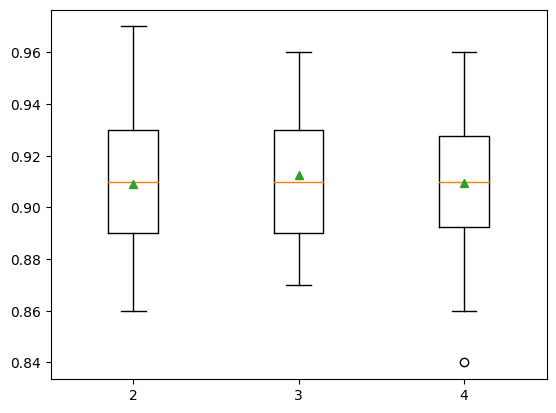

from matplotlib import pyplot
from numpy import arange
from sklearn.neighbors import KNeighborsClassifier
from sklearn.model_selection import cross_val_score, RepeatedStratifiedKFold, RepeatedKFold
from sklearn.ensemble import BaggingClassifier, BaggingRegressor
from sklearn.datasets import make_classification, make_regressionBagging
seed = 5def make_clas_dataset(n_samples=1000, n_features=20, n_informative=15, n_redundant=5, random_state=5):
X, Y = make_classification(n_samples=n_samples, n_features=n_features,
n_informative=n_informative, n_redundant=n_redundant,
random_state=random_state)
return X, Ydef make_reg_dataset(n_samples=1000, n_features=20, n_informative=15, noise=0.1, random_state=5):
X, Y = make_regression(n_samples=n_samples, n_features=n_features,
n_informative=n_informative, noise=noise, random_state=random_state)
return X, Ydef evaluate_clas_model(model, X, Y):
cv = RepeatedStratifiedKFold(n_splits=10, n_repeats=3, random_state=1)
results = cross_val_score(model, X, Y, scoring='accuracy', cv=cv)
return resultsdef show_results(models, X, Y):
results, names = [], []
for name, model in models.items():
scores = evaluate_clas_model(model, X, Y)
results.append(scores)
names.append(name)
print(f'{name}: {scores.mean(): .3f} ({scores.std(): .3f})')
pyplot.boxplot(results, labels=names, showmeans=True)
pyplot.show()Bagged Decision Trees Ensemble
Bagging is an ensemble machine learning algorithm that combines the predictions from many decision trees. It is also easy to implement given that it has few key hyperparameters and sensible heuristics for configuring these hyperparameters. Bagging performs well in general and provides the basis for a whole field of ensemble of decision tree algorithms such as the popular random forest and extra trees ensemble algorithms, as well as the lesser-known Pasting, Random Subspaces, and Random Patches ensemble algorithms.
Bagging Ensemble Algorithm
Bootstrap Aggregation, or Bagging for short, is an ensemble machine learning algorithm. Specifically, it is an ensemble of decision tree models, although the bagging technique can also be used to combine the predictions of other types of models. As its name suggests, bootstrap aggregation is based on the idea of the bootstrap sample. A bootstrap sample is a sample of a dataset with replacement. Replacement means that a sample drawn from the dataset is replaced, allowing it to be selected again and perhaps multiple times in the new sample. This means that the sample may have duplicate examples from the original dataset. The bootstrap sampling technique is used to estimate a population statistic from a small data sample. This is achieved by drawing multiple bootstrap samples, calculating the statistic on each, and reporting the mean statistic across all samples.
An example of using bootstrap sampling would be estimating the population mean from a small dataset. Multiple bootstrap samples are drawn from the dataset, the mean calculated on each, then the mean of the estimated means is reported as an estimate of the population mean. Surprisingly, the bootstrap method provides a robust and accurate approach to estimating statistical quantities compared to a single estimate on the original dataset.
This same approach can be used to create an ensemble of decision tree models. This is achieved by drawing multiple bootstrap samples from the training dataset and fitting a decision tree on each. The predictions from the decision trees are then combined to provide a more robust and accurate prediction than a single decision tree (typically, but not always).
Predictions are made for regression problems by averaging the prediction across the decision trees. Predictions are made for classification problems by taking the majority vote prediction for the classes from across the predictions made by the decision trees. The bagged decision trees are effective because each decision tree is fit on a slightly different training dataset, which in turn allows each tree to have minor differences and make slightly different skillful predictions. Technically, we say that the method is effective because the trees have a low correlation between predictions and, in turn, prediction errors.
Decision trees, specifically unpruned decision trees, are used as they slightly overfit the training data and have a high variance. Other high-variance machine learning algorithms can be used, such as a k-nearest neighbors algorithm with a low k value, although decision trees have proven to be the most effective.
Bagging does not always offer an improvement. For low-variance models that already perform well, bagging can result in a decrease in model performance.
Evaluate Bagging Ensembles
Bagging for Classification
row = [-3.47224758, 1.95378146, 0.04875169, -0.91592588, -3.54022468, 1.96405547,
-7.72564954, -2.64787168, -1.81726906, -1.67104974, 2.33762043, -4.30273117, 0.4839841,
-1.28253034, -10.6704077, -0.7641103, -3.58493721, 2.07283886, 0.08385173, 0.91461126]from sklearn.ensemble import BaggingClassifierX, Y = make_clas_dataset()
X.shape, Y.shape((1000, 20), (1000,))model = BaggingClassifier()cv = RepeatedStratifiedKFold(n_splits=10, n_repeats=3, random_state=1)results = cross_val_score(model, X, Y, scoring='accuracy', cv=cv)
print(f'Accuracy: {results.mean(): .3f} ({results.std(): .3f})')Accuracy: 0.865 ( 0.037)We can also use the Bagging model as a final model and make predictions for classification.
model.fit(X, Y)BaggingClassifier()In a Jupyter environment, please rerun this cell to show the HTML representation or trust the notebook.
On GitHub, the HTML representation is unable to render, please try loading this page with nbviewer.org.
BaggingClassifier()
yhat = model.predict([row])
yhatarray([1])print(f'Predicted Class: {yhat[0]}')Predicted Class: 1Bagging for Regression
from sklearn.ensemble import BaggingRegressorX, Y = make_reg_dataset()model = BaggingRegressor()cv = RepeatedKFold(n_splits=10, n_repeats=3, random_state=1)results = cross_val_score(model, X, Y,
scoring='neg_mean_absolute_error', cv=cv)print(f'MAE: {results.mean(): .3f} ({results.std(): .3f})')MAE: -99.772 ( 10.417)model.fit(X, Y)BaggingRegressor()In a Jupyter environment, please rerun this cell to show the HTML representation or trust the notebook.
On GitHub, the HTML representation is unable to render, please try loading this page with nbviewer.org.
BaggingRegressor()
yhat = model.predict([row])print(f'Prediction: {yhat[0]}')Prediction: -88.26220906961095Bagging Hyperparameters
In this section, we will take a closer look at some of the hyperparameters you should consider tuning for the Bagging ensemble and their effect on model performance.
Explore Number of Trees
An important hyperparameter for the Bagging algorithm is the number of decision trees used in the ensemble. Typically, the number of trees is increased until the model performance stabilizes. Intuition might suggest that more trees will lead to overfitting, although this is not the case. Bagging and related ensembles of decision trees algorithms (like random forest) appear to be somewhat immune to overfitting the training dataset given the stochastic nature of the learning algorithm.
def get_models(param):
models = dict()
if param == 'n_estimators':
n_trees = [10,50]
for n in n_trees:
models[str(n)] = BaggingClassifier(n_estimators=n)
if param == 'max_samples':
for i in arange(0.1, 1.1, 0.1):
key = '%.1f' % i
models[key] = BaggingClassifier(max_samples=i)
if param == 'base_estimator':
models = dict()
for i in range(1,21):
base = KNeighborsClassifier(n_neighbors=i)
models[str(i)] = BaggingClassifier(base_estimator=base)
return modelsX, Y = make_clas_dataset()models = get_models('n_estimators')show_results(models, X, Y)10: 0.858 ( 0.043)
50: 0.875 ( 0.038)
pyplot.boxplot(results, showmeans=True)
pyplot.show()
Explore Number of Samples
The size of the bootstrap sample can also be varied. The default is to create a bootstrap sample that has the same number of examples as the original dataset. Using a smaller dataset can increase the variance of the resulting decision trees and could result in better overall performance
X, Y = make_clas_dataset()models = get_models(param='max_samples')show_results(models, X, Y)0.1: 0.799 ( 0.045)
0.2: 0.833 ( 0.038)
0.3: 0.839 ( 0.036)
0.4: 0.843 ( 0.043)
0.5: 0.849 ( 0.040)
0.6: 0.859 ( 0.035)
0.7: 0.861 ( 0.033)
0.8: 0.861 ( 0.038)
0.9: 0.854 ( 0.042)
1.0: 0.865 ( 0.037)
Explore Alternate Algorithm
Decision trees are the most common algorithm used in a bagging ensemble. The reason for this is that they are easy to configure to have a high variance and because they perform well in general. Other algorithms can be used with bagging and must be configured to have a modestly high variance. One example is the k-nearest neighbors algorithm where the k value can be set to a low value. The algorithm used in the ensemble is specified via the base estimator argument and must be set to an instance of the algorithm and algorithm configuration to use.
X, Y = make_clas_dataset()models = get_models('base_estimator')show_results(models, X, Y)1: 0.884 ( 0.035)
2: 0.884 ( 0.034)
3: 0.887 ( 0.038)
4: 0.886 ( 0.035)
5: 0.886 ( 0.037)
6: 0.882 ( 0.038)
7: 0.876 ( 0.041)
8: 0.879 ( 0.038)
9: 0.876 ( 0.035)
10: 0.876 ( 0.033)
11: 0.875 ( 0.035)
12: 0.872 ( 0.031)
13: 0.876 ( 0.032)
14: 0.878 ( 0.029)
15: 0.872 ( 0.031)
16: 0.871 ( 0.036)
17: 0.874 ( 0.032)
18: 0.873 ( 0.039)
19: 0.873 ( 0.035)
20: 0.873 ( 0.036)
Random Subspace Ensemble
Random Subspace Ensemble is a machine learning algorithm that combines the predictions from multiple decision trees trained on different subsets of columns in the training dataset. Randomly varying the columns used to train each contributing member of the ensemble has the effect of introducing diversity into the ensemble and, in turn, can lift performance over using a single decision tree. It is related to other ensembles of decision trees such as bootstrap aggregation (bagging) that creates trees using different samples of rows from the training dataset, and random forest that combines ideas from bagging and the random subspace ensemble. Although decision trees are often used, the general random subspace method can be used with any machine learning model whose performance varies meaningfully with the choice of input features. In this tutorial, you will discover how to develop random subspace ensembles for classification and regression. After completing this tutorial, you will know: * Random subspace ensembles are created from decision trees fit on different samples of features (columns) in the training dataset. * How to use the random subspace ensemble for classification and regression with scikit-learn. * How to explore the effect of random subspace model hyperparameters on model perfor- mance.
Evaluate Random Subspace Ensembles
Random Subspace Ensemble for Classification
X, Y = make_clas_dataset()model = BaggingClassifier(bootstrap=False, max_features=10)cv = RepeatedStratifiedKFold(n_splits=10, n_repeats=3, random_state=1)results = cross_val_score(model, X, Y, scoring='accuracy', cv=cv)
print(f'{results.mean(): 0.3f} ({results.std():.3f})')model.fit(X,Y)yhat = model.predict([row])
print(yhat[0])Random Subspace Ensemble for Regression
X, Y = make_reg_dataset()model = BaggingRegressor(bootstrap=False, max_features=10)cv = RepeatedKFold(n_splits=10, n_repeats=3, random_state=1)results = cross_val_score(model, X, Y, scoring='neg_mean_absolute_error', cv=cv)print(f'{results.mean():0.3f} ({results.std():0.3f})')model.fit(X, Y)yhat = model.predict([reg_row])
print(f'{int(yhat[0])}')Random Subspace Ensemble Hyperparameters
Explore Number of Trees
def get_models():
models = dict()
n_trees = [10,50,100]
for n in n_trees:
models[str(n)] = BaggingClassifier(n_estimators=n, bootstrap=False, max_features=10)
return modelsX, Y = make_clas_dataset()models = get_models()
modelsshow_results(models, X, Y)Explore Number of Features
def get_models():
models = dict()
for n in range(1,5):
models[str(n)] = BaggingClassifier(n_estimators=100, bootstrap=False, max_features=n)
return modelsX,Y = make_clas_dataset()models = get_models()show_results(models, X, Y)Explore Alternate Algorithm
X, Y = make_clas_dataset()model = BaggingClassifier(base_estimator=KNeighborsClassifier(), bootstrap=False, max_features=10)cv = RepeatedStratifiedKFold(n_splits=10, n_repeats=3, random_state=1)results = cross_val_score(model, X, Y, scoring='accuracy', cv=cv)
print(f'Mean Accuracy: {results.mean():.3f} ({results.std():.3f})')Feature Selection Bagging Ensemble
Single Feature Selection Method Ensembles
from sklearn.tree import DecisionTreeClassifier
from sklearn.pipeline import Pipeline
from sklearn.ensemble import VotingClassifierANOVA F-statistic Ensemble
from sklearn.feature_selection import SelectKBest, f_classifdef get_ensemble(n_features):
models = []
for i in range(1, n_features+1):
feat_selec = SelectKBest(score_func=f_classif, k=i)
model = DecisionTreeClassifier()
pipe = Pipeline([('fs', feat_selec), ('m', model)])
models.append((str(i), pipe))
ensemble = VotingClassifier(estimators=models, voting='hard')
return ensembleX, Y = make_clas_dataset()ensemble = get_ensemble(X.shape[1])cv = RepeatedStratifiedKFold(n_splits=10, n_repeats=3, random_state=1)results = cross_val_score(ensemble, X, Y, scoring='accuracy', cv=cv)
print(f'{results.mean(): .3f} ({results.std(): .3f})')Mutual Information Ensemble
from sklearn.feature_selection import SelectKBest, mutual_info_classifdef get_ensemble(n_features):
models = []
for i in range(1, n_features+1):
fs = SelectKBest(score_func=mutual_info_classif, k=i)
model = DecisionTreeClassifier()
pipe = Pipeline([('fs', fs), ('m', model)])
models.append((str(i), pipe))
ensemble = VotingClassifier(estimators=models, voting='hard')
return ensembleX,Y = make_clas_dataset()ensemble = get_ensemble(X.shape[1])cv = RepeatedStratifiedKFold(n_splits=10, n_repeats=3, random_state=1)results = cross_val_score(ensemble, X, Y, scoring='accuracy', cv=cv)
print(f'{results.mean(): .3f} ({results.std(): .3f})')Recursive Feature Selection Ensemble
from sklearn.feature_selection import RFEdef get_ensemble(n_fatures):
models = []
for i in range(1, n_fatures+1):
fs = RFE(estimator=DecisionTreeClassifier(), n_features_to_select=i)
model = DecisionTreeClassifier()
pipe = Pipeline([('fs', fs), ('m', model)])
models.append((str(i), pipe))
ensemble = VotingClassifier(estimators=models, voting='hard')
return ensembleX, Y = make_clas_dataset()ensemble = get_ensemble(X.shape[1])cv = RepeatedStratifiedKFold(n_splits=10, n_repeats=3, random_state=1)results = cross_val_score(ensemble, X, Y, scoring='accuracy', cv=cv)
print(f'{results.mean(): .3f} ({results.std(): .3f})')Combined Feature Selection Ensembles
Ensemble With Fixed Number of Features
Ensemble With Contiguous Number of Features
Random Forest Ensemble
Evaluate Random Forest Ensembles
Random Forest for Classification
from sklearn.ensemble import RandomForestClassifierX, Y = make_clas_dataset(random_state=3)model = RandomForestClassifier()cv = RepeatedStratifiedKFold(n_splits=10, n_repeats=3, random_state=1)results = cross_val_score(model, X, Y, scoring='accuracy', cv=cv)
print(f'Mean Accuracy: {results.mean():.3f} ({results.std():.3f})')model.fit(X, Y)row = [-8.52381793, 5.24451077, -12.14967704, -2.92949242, 0.99314133, 0.67326595,
-0.38657932, 1.27955683, -0.60712621, 3.20807316, 0.60504151, -1.38706415, 8.92444588,
-7.43027595, -2.33653219, 1.10358169, 0.21547782, 1.05057966, 0.6975331, 0.26076035]yhat = model.predict([row])
print(yhat[0])Random Forest for Regression
from sklearn.ensemble import RandomForestRegressorX , Y = make_reg_dataset(random_state=2)model = RandomForestRegressor()cv = RepeatedKFold(n_splits=10, n_repeats=3, random_state=1)results = cross_val_score(model, X, Y, scoring='neg_mean_absolute_error', cv=cv)
print(f'{results.mean():.3f} ({results.std():.3f})')model.fit(X, Y)row = [-0.89483109, -1.0670149, -0.25448694, -0.53850126, 0.21082105, 1.37435592,
0.71203659, 0.73093031, -1.25878104, -2.01656886, 0.51906798, 0.62767387, 0.96250155,
1.31410617, -1.25527295, -0.85079036, 0.24129757, -0.17571721, -1.11454339, 0.36268268]yhat = model.predict([row])
print(f'{yhat[0]}')Random Forest Hyperparameters
from sklearn.ensemble import RandomForestClassifierExplore Number of Samples
from numpy import arangedef get_models():
models = dict()
for i in arange(0.1, 1.1, 0.1):
key = '%.1f' % i
if i == 1.0:
i = None
models[key] = RandomForestClassifier(max_samples=i)
return modelsX , y = make_clas_dataset()models = get_models()show_results(models, X, y)Explore Number of Features
def get_models():
models = dict()
for i in range(1,8):
models[str(i)] = RandomForestClassifier(max_features=i)
return modelsX, y = make_clas_dataset()models = get_models()show_results(models, X, y)Explore Number of Trees
def get_models():
models = dict()
n_trees = [10, 50, 100]
for n in n_trees:
models[str(n)] = RandomForestClassifier(n_estimators=n)
return modelsX, y = make_clas_dataset()models = get_models()
modelsshow_results(models, X, y)Explore Tree Depth
def get_models():
models = dict()
depths = [i for i in range(1,4)] + [None]
for n in depths:
models[str(n)] = RandomForestClassifier(max_depth=n)
return modelsX, y = make_clas_dataset()models = get_models()
modelsshow_results(models, X, y)Extra Trees Ensemble
Evaluate Extra Trees Ensembles
Extra Trees for Classification
from sklearn.ensemble import ExtraTreesClassifierX, y = make_clas_dataset(random_state=4)model = ExtraTreesClassifier()cv = RepeatedStratifiedKFold(n_splits=10, n_repeats=3, random_state=1)results = cross_val_score(model, X, y, scoring='accuracy', cv=cv)
print(f'{results.mean(): .3f} ({results.std(): .3f})') 0.907 ( 0.025)model.fit(X, y)ExtraTreesClassifier()In a Jupyter environment, please rerun this cell to show the HTML representation or trust the notebook.
On GitHub, the HTML representation is unable to render, please try loading this page with nbviewer.org.
ExtraTreesClassifier()
row = [-3.52169364, 4.00560592, 2.94756812, -0.09755101, -0.98835896, 1.81021933,
-0.32657994, 1.08451928, 4.98150546, -2.53855736, 3.43500614, 1.64660497, -4.1557091,
-1.55301045, -0.30690987, -1.47665577, 6.818756, 0.5132918, 4.3598337, -4.31785495]yhat = model.predict([row])
print(f'{yhat[0]}')0Extra Trees for Regression
from sklearn.ensemble import ExtraTreesRegressorX, y = make_reg_dataset(random_state=3)model = ExtraTreesRegressor()cv = RepeatedKFold(n_splits=10, n_repeats=3, random_state=1)results = cross_val_score(model, X, y, scoring='neg_mean_absolute_error', cv=cv)
print(f'{results.mean(): .3f} ({results.std(): .3f})')-69.667 ( 4.984)model.fit(X, y)ExtraTreesRegressor()In a Jupyter environment, please rerun this cell to show the HTML representation or trust the notebook.
On GitHub, the HTML representation is unable to render, please try loading this page with nbviewer.org.
ExtraTreesRegressor()
row = [-0.56996683, 0.80144889, 2.77523539, 1.32554027, -1.44494378, -0.80834175,
-0.84142896, 0.57710245, 0.96235932, -0.66303907, -1.13994112, 0.49887995, 1.40752035,
-0.2995842, -0.05708706, -2.08701456, 1.17768469, 0.13474234, 0.09518152, -0.07603207]yhat = model.predict([row])
print(f'{int(yhat[0])}')53Extra Trees Hyperparameters
from sklearn.ensemble import ExtraTreesClassifierExplore Number of Trees
def get_models():
models = dict()
n_trees = [10, 50, 100]
for n in n_trees:
models[str(n)] = ExtraTreesClassifier(n_estimators=n)
return modelsX, y = make_clas_dataset(random_state=4)models = get_models()
models{'10': ExtraTreesClassifier(n_estimators=10),
'50': ExtraTreesClassifier(n_estimators=50),
'100': ExtraTreesClassifier()}show_results(models, X, y)10: 0.855 ( 0.025)
50: 0.902 ( 0.028)
100: 0.906 ( 0.023)
Explore Number of Features
def get_models():
models = dict()
for i in range(1, 5):
models[str(i)] = ExtraTreesClassifier(max_features=i)
return modelsX , y = make_clas_dataset(random_state=4)models = get_models()
models{'1': ExtraTreesClassifier(max_features=1),
'2': ExtraTreesClassifier(max_features=2),
'3': ExtraTreesClassifier(max_features=3),
'4': ExtraTreesClassifier(max_features=4)}show_results(models, X, y)1: 0.895 ( 0.025)
2: 0.901 ( 0.026)
3: 0.907 ( 0.028)
4: 0.904 ( 0.025)
Explore Minimum Samples per Split
def get_models():
models = dict()
for i in range(2, 5):
models[str(i)] = ExtraTreesClassifier(min_samples_split=i)
return modelsX, y = make_clas_dataset(random_state=4)models = get_models()
models{'2': ExtraTreesClassifier(),
'3': ExtraTreesClassifier(min_samples_split=3),
'4': ExtraTreesClassifier(min_samples_split=4)}show_results(models, X, y)2: 0.909 ( 0.026)
3: 0.913 ( 0.025)
4: 0.909 ( 0.027)